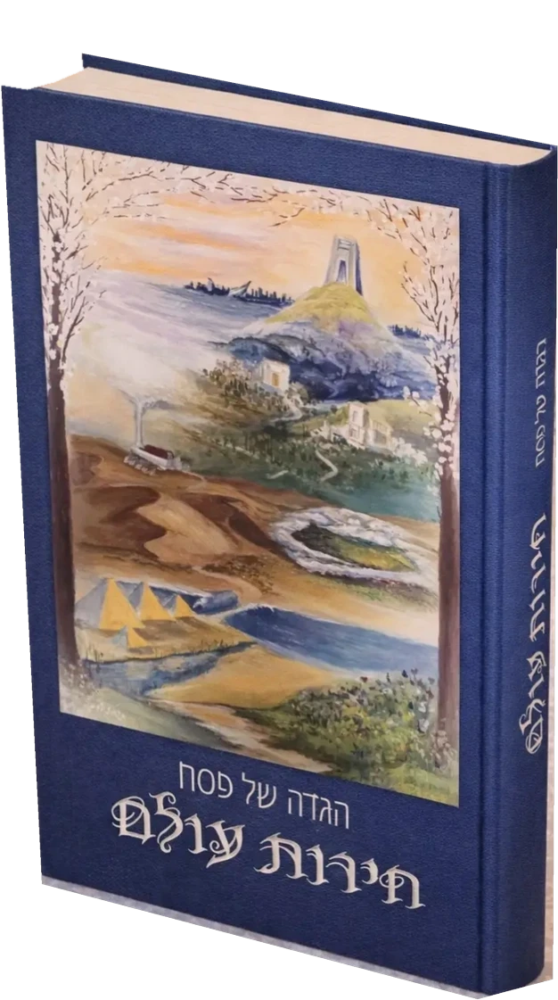
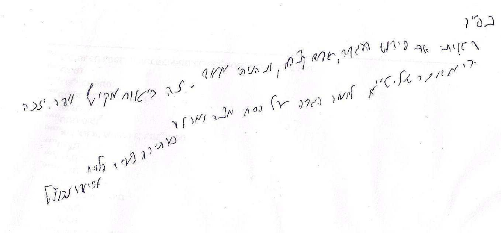
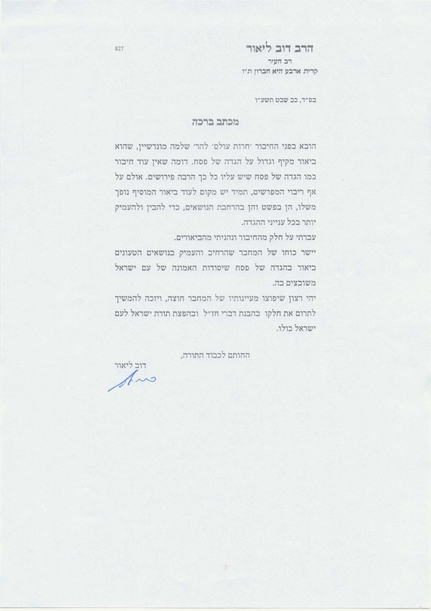

חירות עולם
הגדה של פסח עם פירוש · הרב שלמה מונדשיין
פירוש על ההגדה של פסח, ובו שלושה מדורים:
- ביאורי הפשטלעיון כאן באתרביאור רציף על כל נוסח ההגדה, העוסק הן ברמה הראשונית של הבנת הדברים בבהירות והן בניתוח מעמיק החושף את הרעיונות העומדים מאחוריהם.
- הרחבותבהגדה המודפסתבירורים מקיפים סביב נושאים פרשניים בתוכן ההגדה, וכן סביב נושאים רעיוניים כלליים העולים מתוך התבוננות והעמקה בנוסח הנאמר.
- עיוני הלכהבהגדה המודפסתהסברים מפורטים הנותנים רקע הלכתי לכל פרט ממצוות הלילה, מן המקורות עד ההלכה למעשה, תוך שילוב רעיונות מחשבתיים המשתקפים מתוך פרטי ההלכות.
באתר מוצגים ביאורי הפשט במלואם. ההרחבות ועיוני ההלכה מופיעים בהגדה המודפסת בלבד.
מכתבי ברכה להגדה
מכתב ברכה מאת הרב אביגדר נבנצל
רב העיר העתיקה בירושלים
להגדה של פסח "חירות עולם"

בס"ד
ראיתי את פירוש ההגדה, אפס קצהו, ונהניתי מאד, זה ביאור מקיף ויפה.
יזכה המחבר שליט"א לומר הגדה על פסח מצה ומרור.
כעתירת צעיר הלווים
אביגדר נבנצל
מכתב ברכה מאת הרב דוב ליאור
רב העיר קרית ארבע – חברון
להגדה של פסח "חירות עולם"

בס"ד, כב שבט תשע"ו
הובא בפני החיבור 'חרות עולם' להר' שלמה מונדשיין, שהוא ביאור מקיף וגדול על הגדה של פסח. דומה שאין עוד חיבור כמו הגדה של פסח שיש עליו כל כך הרבה פירושים. אולם על אף ריבוי המפרשים, תמיד יש מקום לעוד ביאור המוסיף נופך משלו, הן בפשט והן בהרחבת הנושאים, כדי להבין ולהעמיק יותר בכל ענייני ההגדה.
עברתי על חלק מהחיבור ונהניתי מהביאורים.
יישר כוחו של המחבר שהרחיב והעמיק בנושאים הטעונים ביאור בהגדה של פסח שיסודות האמונה של עם ישראל משובצים בה.
יהי רצון שיפוצו מעיינותיו של המחבר חוצה, ויזכה להמשיך לתרום את חלקו בהבנת דברי חז"ל ובהפצת תורת ישראל לעם ישראל כולו.
החותם לכבוד התורה,
דוב ליאור
מכתב ברכה מאת הרב יוסף צבי רימון
רב קהילת אלון שבות דרום, ראש מרכז הלכה והוראה
להגדה של פסח "חירות עולם"
בס"ד, ח' באדר א' ה'תשע"ו
ויוציאנו ה' ממצרים לא על ידי מלאך ולא על ידי שרף, אלא הקב"ה בכבודו ובעצמו. הגאולה לא היתה יכולה להיעשות ע"י שליח כיוון שכל עניינה של יציאת מצרים הוא בגילוי השכינה. עומק נוסף בביאור נקודה זו עולה מדברי מרן הרב קוק (עולת ראיה, ח"א, עמוד כו):
יציאת מצרים היתה מאורע כזה, שרק לפי מראית העין הגסה נחשבת היא לדבר שהיה איזה פעם ועבר, ונשאר בתור זכרון אדיר בתולדות ישראל, ובתולדה הכללית של האנושיות כולה. אבל באמת על ידי הכרה תוכית אנו באים לידי ידיעה, כי עצם פעולת יציאת מצרים היא פעולה שאינה נפסקת כלל, התגלות יד ד' בפרסום ובהופעה בהירה על פני ההיסתוריה של התבל, היא התפרצות אור נשמת אלהים החיה והפועלת בכל מרחבי עולם, אשר ישראל זכה לזה, שעל ידי גדלו והכשרת קדושתו, תאיר את אורה להזריח אורים גדולים בכל נאות מחשכים לדורי דורים. והמפעל העצמי של יציאת מצרים הולך הוא ופועל את פעולתו, הזרוע האלהית, אשר נחשפה במצרים לגאולתם של ישראל, היא היא נטויה ועומדת בהכנת המשכת פעולתה.
מלאך פועל פעולה חד פעמית. מלאך הוא מלשון 'מלאכה' ("שם התואר מלאך הוא מגזרת מלאכה, מי שנמסר לו לעשות מלאכת שולחו" - הכתב והקבלה, בראשית מ"ח, טו). יציאת מצרים אינה מלאכה, יציאת מצרים איננה אירוע חד פעמי. יציאת מצרים היא "פעולה שאינה נפסקת כלל", יציאת מצרים היא פעולה שיוצרת אור בעולם, אור של חירות, אור אלהי - אור שאמור להאיר את החושך "לדורי דורים". יציאת מצרים היא פעולה שהולכת ופועלת כל הזמן. דבר כזה לא יכול להתבצע על ידי מלאך; דבר זה איננו פעולה, אלא חלק מבריאת העולם, יצירת מהות חדשה בעולם. גילוי כבוד ה' בעולם, לעם ישראל ולעולם כולו, יצירה של מציאות חדשה, תיקון עולם חדש - אינם יכולים להיעשות "לא על ידי מלאך... אלא הקדוש ברוך הוא בכבודו ובעצמו"!
בכדי לחוש את היציאה המחודשת לחירות מידי שנה ושנה, בכדי להפוך שוב ושוב לעבדי ה', צריכים רוממות רוח מיוחדת בליל הסדר. הבסיס לרוממות הרוח הוא ההגדה של פסח, אולם, אנשים רבים אינם מבינים את הדברים הבסיסיים שבהגדה.
יפה עשה ר' שלמה מונדשיין הי"ו, השוכן באהלה של תורה בישיבת הר המור, וביאר את ההגדה בביאור המאפשר להבין את פשטות ההגדה מחד, אך עם העמקה והרחבה המאפשרות להגיע להבנה עמוקה בדברי ההגדה. בתוך דבריו שילב גם את ענייני ההלכה המשמעותיים לליל הסדר ודברים נוספים המאפשרים להבין את ההגדה וגם לקיים את מצוות הלילה בצורה רצינית ונעימה.
ראיתי חלקים מן הספר ובחלקים אלו ניכרת היתה כתיבה בהירה ותמציתית והשקעה מרובה מאוד בחתירה לאמת, בחתירה להבנת עומק הפשט של ההגדה. כמובן, שלכל יהודי מישראל צריכה להיות שאיפה להגיע לרבדים העמוקים ביותר שאליהם הוא מסוגל להגיע, אולם, העומק יכול לבוא רק כקומה נוספת לאחר הבנת יסודות הדברים, וגם הבנת יסודות הדברים דורשת ידע רב ועומק רב.
הנני לברך את המחבר הי"ו, שיזכה להמשיך ללמוד בעומק ובדבקות, לכתוב חיבורים נוספים, להגדיל תורה ולהאדירה,
בברכת התורה והמצווה,
יוסף צבי רימון
מכתב ברכה מאת הרב פנחס מונדשיין
ר"מ בישיבת מרכז הרב, אבי המחבר
להגדה של פסח "חירות עולם"
לבני יקירי שלמה נ"י
שמחתי מאד לראות את פרי ביכוריך, חיבור יקר וחשוב לביאור הגדה של פסח דבר דבור על אופניו, שעל מקצת דבריו התענגנו בלילות הסדר המשפחתיים וכעת יזכו ליהנות ממנו גם אחרים. עלה בליבי להעיר בקצרה על המשותף שבין שלושת הדברים הנ"ל: הגדה, ביכורים, ויחס אב לבנו; מוסף על כך שדרישת מקרא ביכורים ויחס האב לבניו, הם תשתית ההגדה של פסח. יש לומר שהמשותף לכל שלושת אלו הוא - פעולת ה'הגדה'; ויש לעיין במשמעותה ויחסה לכל אחד מהם.
פעולת סיפור יציאת מצרים מאב לבנו קרויה "הגדה", כמ"ש: "והגדת לבנך ביום ההוא", ובשל כך חיבור סדר ליל פסח קרוי "הגדה של פסח" ואף הדברים אותם אומר מביא הבכורים קרויים "הגדה" כמ"ש "הגדתי היום".
יש לעיין מדוע נוקט הפסוק כאן בלשון "הגדה" ולא לשון "סיפור" כמו "ולמען תספר" או לשון "אמירה" כמו "ואמרת אליו"? כמו כן, מדוע דווקא פסוק זה: "והגדת לבנך ביום ההוא", הוא המובא במשנה (פסחים קטז ע"ב) - וממילא בהגדה של פסח - כמקור לכך ש"בכל יום ויום חייב אדם לראות את עצמו כאילו הוא יצא ממצרים"? יפה הבאת אף את גירסת הרמב"ם בפ"ז ה"ו שגרס "להראות את עצמו" (אמנם יש לעיין בגירסתו בסדר ההגדה וכן בגירסתו בפירוש המשניות ואכמ"ל) וביארת: "דהיינו שצריך לנהוג בליל הסדר בדרך חירות, כאילו עכשיו יצא ממצרים ונהיה בן חורין. את חיוב זה לומד בעל ההגדה מכך שנאמר: "עשה ה' לי בצאתי", ולא: "עשה ה' לאבותינו בצאתם", ע"כ. והנה אמנם תיבת "לי" מורה על "כאילו הוא יצא ממצרים" אולם עדיין לא התברר ממנה היכן ראה בה הרמב"ם מקור לכך שחייב "להראות את עצמו" ולא רק "לראות את עצמו"? כמו כן, יש לשים לב שהרמב"ם הוסיף על המשנה וכתב: "כאילו הוא בעצמו יצא עתה משעבוד מצרים", הוסיף תיבת "עתה", ויש לעיין היכן מצא לה רמז בפסוק זה? כמו כן, נוסיף ונשאל: מדוע מביא הבכורים מיד בבואו אל הכהן אומר: "הגדתי היום לד' אלוהיך", בלשון עבר, למרות שאינו אומר זאת אלא רק כעת?
יסוד התשובה לכל השאלות הנ"ל הינו מילת "הגדה" לפי הבנת תרגום אונקלוס שמתרגם את "והגדת" כ"ותחוי", וכך תירגם אונקלוס גם מקומות נוספים בהם מופיע לשון "הגדה", ומהו לשון חיווי? בב"מ דף ז ע"א מבאר רש"י: "מחווי ליה - מראה באצבעותיו כלפי מעלה", ואם כן, למדנו שבציווי "והגדת לבנך" אין די באמירה בעלמא אלא יש צורך ללוות אותה בתנועות גוף דוגמת הוראה באצבע. ונראה שמכאן למד הרמב"ם שהחיוב הינו "להראות" דזה "מחוי", וכמו כן סיפור המלווה בתנועות הגוף יכול רק להיוולד מהרגשה כאילו עתה ממש יצא. ועתה אף מבואר כיצד יכול מביא הביכורים לומר "הגדתי" בלשון עבר, כי לפי זה נראה שעצם פעולת הבאת הביכורים כשלעצמה הינה כבר בגדר "הגדה" אף קודם שפתח את פיו להודות, וממילא אומר בלשון עבר כשכוונתו לעצם הבאתו (וברמב"ן שם אכן כתב: "בפרי הזה שהבאתי הגדתי והודיתי", וכנראה שהוקשה לו כנ"ל ולדברינו זה מדויק בפועל "הגדה").
מברך אני אותך, שלמה בני היקר, שכשם שזכית לברר ולהעמיק בסוגיה זו כן תזכה להמשיך ללמוד תורה לכל היקפה ועומקה כיד ד' הטובה עליך ולזכות אחרים בלימודך והכול מתוך שמחה ובריאות.
אביך אוהבך
ביאורי הפשט
ביאור רציף על נוסח ההגדה, לפי סימני הסדר. הסימנים המודגשים כוללים ביאור; מדורי "הרחבות" ו"עיוני הלכה" יעלו לאתר בהמשך.
מגידהמגיד מחולק לשישה חלקים, לפי חלקי הפסוק "וְהִגַּדְתָּ לְבִנְךָ, בַּיּוֹם הַהוּא, לֵאמֹר, בַּעֲבוּר זֶה, עָשָׂה ה' לִי, בְּצֵאתִי מִמִּצְרָיִם"
- ✦מגיד · פתיחהפתיחת המגיד"הא לחמא עניא", "מה נשתנה", והקדמה בעניין מבנה ההגדה
- אמגיד · חלק אחלק ראשון – "וְהִגַּדְתָּ לְבִנְךָ"מ"עבדים היינו" עד "כנגד ארבעה בנים"
- במגיד · חלק בחלק שני – "בַּיּוֹם הַהוּא""יכול מראש חודש"
- גמגיד · חלק גחלק שלישי – "לֵאמֹר"סיפור יציאת מצרים: "מתחילה עובדי עבודה זרה" ומקרא ביכורים
- דמגיד · חלק דחלק רביעי – "בַּעֲבוּר זֶה""רבן גמליאל היה אומר"
- המגיד · חלק החלק חמישי – "עָשָׂה ה' לִי""בכל דור ודור"
- ומגיד · חלק וחלק שישי – "בְּצֵאתִי מִמִּצְרָיִם""לפיכך", תחילת ההלל וברכת "אשר גאלנו"